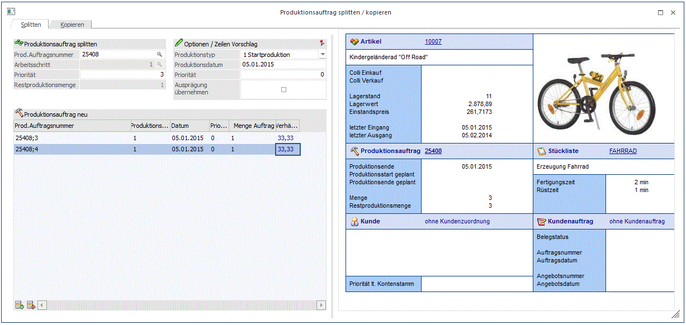
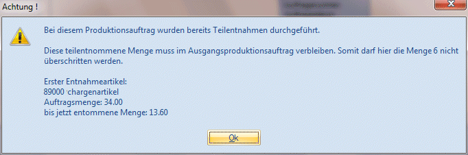
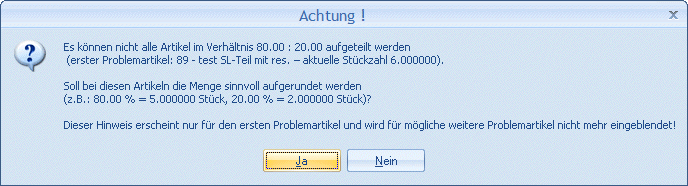
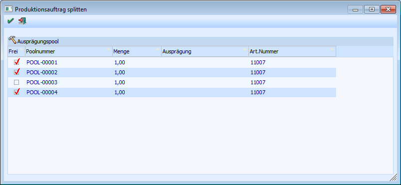
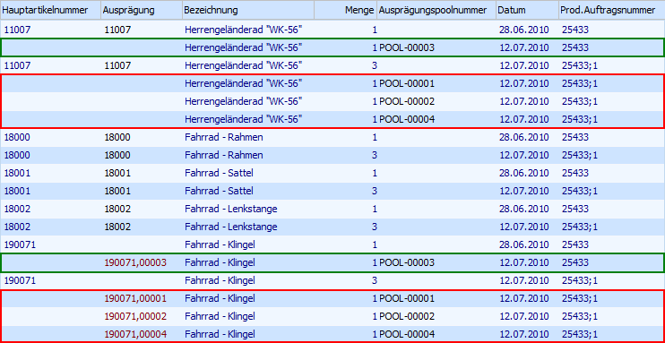
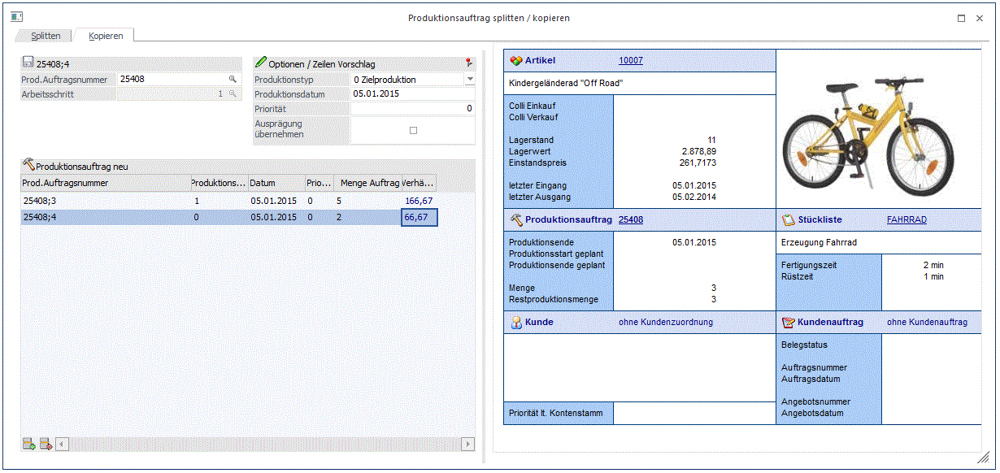

Mit dem Programmbereich, welcher über den Menüpunkt
1 WinLine PPS
1 Produktion
1 Splitten und Kopieren
aufgerufen wird, können bestehende Produktionsaufträge im jeweiligen Reiter entweder gesplittet oder kopiert werden. Beim Splitten kann die ursprünglich vereinbarte Produktionsmenge reduziert und die Differenz einem neuen Auftrag bzw. mehreren neuen Aufträgen zugeteilt werden. Beim Kopieren kann ein bzw. können mehrere neue Produktionsaufträge mit einer anderen Produktionsmenge definiert und angelegt werden.
Produktionsauftrag splitten

Produktionsauftrag splitten
Ø Prod. Auftragsnummer
Eingabe der Produktionsauftragsnummer, welche aufgesplittet werden soll.
Ø Arbeitsschritt
Wenn in der obersten Ebene des selektierten Produktionsauftrags mehrere Produktionsartikel zugewiesen sind (d.h. es sind mehrere Arbeitsschritte mit der gleichen Produktionsauftragsnummer vorhanden), muss durch Eingabe des entsprechenden Arbeitsschritts der zu splittende Produktionsartikel definiert werden.
Achtung
In der Folge wird nur noch dieser Artikel (samt seines Arbeitsschritts und deren Sub-Ebenen) für das Splitten berücksichtigt.
Hinweis
Bei Auswahl eines Produktionsauftrags per "Produktionsauftrag - Matchcode" wird der entsprechende Arbeitsschritt automatisch übernommen.
Sollte in der obersten Ebene des selektierten Produktionsauftrags nur ein Produktionsartikel (Arbeitsschritt) zugewiesen sein, dann wird das Feld "Arbeitsschritt" als inaktiv dargestellt (die Arbeitsschrittnummer wird dabei automatisch hinterlegt)
Ø Priorität
An dieser Stelle wird die im Produktionsauftrag hinterlegte Priorität (max. 5-stellig) angezeigt.
Hinweis
Eine Änderung der Priorität an diesem Punkt ist auch möglich. Diese neu hinterlegte Priorität wird dann beim Durchführen der Splittung in den Quell-Produktionsauftrag zurückgeschrieben.
Hinweis
Über die PPS-Parameter (WinLine Start - Parameter - Applikations-Parameter - PPS-Parameter - Parameter - Option "absteigende Priorität verwenden…") kann definiert werden, ob "0" oder "99999" die höchste zu vergebene Priorität besitzt.
Ø Restproduktionsmenge
In diesem Infofeld wird die noch verbleibende Menge des Quellauftrags nach dem Splitten angezeigt.
Optionen / Zeilen Vorschlag
Ø Produktionstyp
Der Produktionstyp (Start- bzw. Zielproduktion) des Quellauftrags wird in diesem Feld anzeigt. Der Wert dient als Information. Eine Änderung des Typs kann für den Quellauftrag nicht gespeichert werden.
Ø Produktionsdatum
Das Produktionsdatum des Quellauftrags wird in diesem Feld anzeigt. Der Wert dient als Information. Eine Änderung des Datums kann für den Quellauftrag nicht gespeichert werden.
Ø Priorität
Die Priorität des Quellauftrags wird in diesem Feld anzeigt. Der Wert dient als Information. Eine Änderung der Priorität in diesem Feld kann für den Quellauftrag nicht gespeichert werden.
Ø Ausprägung übernehmen
Wenn dieser Checkbox aktiviert ist, können die aufgeteilten Ausprägungen des Fertigartikels in die abgesplitteten Aufträgen übernommen werden. Dabei geht das Fenster "Ausprägungen erfassen" beim Splitten auf und die gewünschte Ausprägung(en) kann für den Fertigartikel erfasst werden. Wenn die Checkbox nicht aktiviert ist, öffnet sich das Fenster "Ausprägungen erfassen" beim Splitten nicht. Achtung: wenn der Fertigartikel im ursprünglichen Auftrag aufgeteilt war, wird die Aufteilung inkl. der ursprünglichen Menge von der Ausprägung in den neuen Produktionsauftrag direkt übernommen (auch wenn eine abweichende neue Produktionsmenge für den Hauptartikel hinterlegt ist).
Produktionsauftrag neu
In diesem Bereich kann ein bzw. mehrere Produktionsaufträge für das Splitten definiert werden.
Ø Prod. Auftragsnummer
Eingabe der Produktionsauftragsnummer für den neuen Auftrag, wobei eine neue Auftragsnummer automatisch vorgeschlagen wird. Diese setzt sich aus der alten Auftragsnummer + einer pro Auftrag aufsteigenden laufenden Nummer zusammen (getrennt werden diese beiden Werte durch das im Applikationsparameter (PPS-Parameter) hinterlegte Trennzeichen bei der Produktionsauftragsanlage, z.B. ";").
Hinweis
Es können an dieser Stelle nur neue Auftragsnummern hinterlegt werden. Eine Eingabe einer bereits existierenden Produktionsauftragsnummer ist nicht möglich.
Ø Produktionstyp
Über den Produktionstyp wird bestimmt, ob die Produktion zu einem bestimmten Zeitpunkt (gemeint ist das "Produktionsdatum") starten oder enden soll. Folgende Optionen können gewählt werden:
ü 0 - Zielproduktion
Bei diesem
Produktionstyp wird über das "Produktionsdatum" ein Zeitpunkt definiert, zu dem
der Produktionsauftrag abgeschlossen sein soll und der Artikel somit fertig
gestellt sein muss. Diese Methode ist die Rückwärtsterminierung.
Hinweis
Die Zielproduktion kann unter Umständen dazu führen, dass der Produktionsauftrag, z.B. wegen Ressourcenknappheit, nicht zeitgerecht fertig gestellt werden kann und somit eine Einplanung nicht möglich sein wird.
ü 1 - Startproduktion
Bei diesem
Produktionstyp wird über das "Produktionsdatum" ein Zeitpunkt definiert, zu dem
der Produktionsauftrag begonnen werden soll. Diese Methode ist die
Vorwärtsterminierung.
Hinweis
Bei der Startproduktion kann es nie zu Konflikten kommen. Allerdings kann unter Umständen sehr viel Zeit benötigt werden bis der Produktionsauftrag beendet werden kann.
Hinweis
Es wird der Produktionstyp vorgeschlagen, welcher bei dem ursprünglichen Produktionsauftrag hinterlegt wurde.
Ø Produktionsdatum
Eingabe des Datums für die "Zielproduktion" bzw. die "Startproduktion".
Hinweis
Es wird das Produktionsdatum vorgeschlagen, welches bei dem ursprünglichen Produktionsauftrag hinterlegt wurde.
Ø Priorität
In diesem Feld kann eine Prioritätsnummer (5-stellig numerisch) für den neuen Produktionsauftrag vergeben werden, wobei die Zahl frei gewählt werden kann. Die Priorität dient z.B. als Selektionskriterium in diversen Programmen.
Hinweis
Es wird die Priorität vorgeschlagen, welche bei dem ursprünglichen Produktionsauftrag hinterlegt wurde.
Ø Menge Auftrag
Hier wird die Produktionsmenge hinterlegt, welche bei dem neuen Produktionsauftrag bzw. bei den neuen Aufträgen produziert werden soll.
Hinweis
Um die hier hinterlegte Menge wird die Produktionsmenge des ursprünglichen Auftrags reduziert.
Achtung
Die Produktionsmenge darf nicht größer oder gleich der Produktionsmenge des ursprünglichen Auftrags sein und muss 0,00 übersteigen.
Hinweis
Es ist nun möglich Produktionsaufträge zu splitten, wofür Stücklistenteilen im Voraus schon teilentnommen wurden. Beim Splitten muss die verbleibende Menge vom Originalauftrag zumindest gleich groß bleiben wie die Menge wofür Teile schon entnommen wurden. Andernfalls erscheint beispielsweise die folgende Meldung:

Nach dem Splitten verbleiben schon entnommene Mengen von Stücklistenteilen ausschließlich beim Originalauftrag.
Ø Verhältnis %
An dieser Stelle wird das prozentuale Verhältnis der Aufsplittung als Information dargestellt
Hinweis
Im Zuge des Splittens des Produktionsauftrages wird die Produktionsmenge für jedes Stücklistenteil nach dem Splittmengenverhältnis neu berechnet. Wenn ein Ausschuss-Prozentsatz bei einem bzw. mehreren Stücklistenteilen im Stücklistenstamm hinterlegt ist, kann es dazu kommen, dass die folgende Warnmeldung nach dem Drücken des OK-Buttons ausgegeben wird, um "unrunde" Produktionsmengen zu verhindern (d.h. neue Produktionsmengen, die mehr Nachkommastellen haben als von der Artikelgruppe vorgesehen sind):

Wenn die Meldung mit JA bestätigt wird, werden die Produktionsmengen für alle Stücklistenteile mit hinterlegtem Ausschuss-Prozentsatz auf eine "runde" Zahl in den gesplitteten Produktionsaufträgen aufgerundet (d.h. eine Zahl, die die korrekte Anzahl von Nachkommastellen laut Artikelgruppe hat). Wenn NEIN gewählt wird, wird das Splittvorgang abgebrochen (ohne das Fenster zu schließen).
Bereich "Info"
Im rechten Bereich des Bildschirms wird der Info-Bereich aufgeführt. In diesem werden die relevanten Informationen (Artikel, Stückliste, Kunde, Auftrag) des aufzusplittenden (ursprünglichen) Produktionsauftrags angezeigt.
Buttons
Ø  OK
OK
Durch Drücken dieses Buttons wird die Splittung des Produktionsauftrags durchgeführt. Dabei wird automatisch nacheinander in die Programmbereiche
ü Ausprägung und
ü Produktionsauftrag - Tätigkeit einplanen
gewechselt. Außerdem wird die ggfs. neu hinterlegte Priorität in den ursprünglichen Produktionsauftrag zurückgeschrieben.
Hinweis
Die Verzweigung in andere Programmbereiche geschieht nur, wenn dieses notwendig ist, also wenn z.B. Komponenten mit Ausprägungen vorhanden sind (Fenster "Ausprägung") oder Tätigkeiten in der Stückliste des Produktionsartikels hinterlegt sind (Fenster "Produktionsauftrag - Tätigkeit einplanen").
Achtung
Wenn bei dem Produktionsartikel mit dem Ausprägungspool gearbeitet wird, dann kann während des Splittens in einem extra Fenster entschieden werden, welche Poolnummern dem neuen Produktionsauftrag zugeordnet werden sollen.
Beispiel
Der Produktionsartikel 11007 (Herrengeländerad "WK-56") wird mit Identnummer geführt. Da bei der Produktion auch Komponenten benötigt werden, die ebenfalls mit Identnummern geführt werden, ist in der Stückliste des Artikels 11007 die Option "Ausprägungspool" (Register "Zusatz") aktiviert.
Am 22.06.2010 erfolgte die Anlage eines Produktionsauftrags (25433) über die Produktion von 4 Fahrrädern (Produktionsdatum "28.06.2010"; Produktionstyp "1- Startproduktion"). Aufgrund von Ressourcenengpässen soll dieser Auftrag nun aufgesplittet werden (Produktionsstart von 3 der 4 Fahrräder erst am 12.07.2010).
Aufgrund des Ausprägungspools wird nach Bestätigung des OK-Buttons das nachfolgende Fenster geöffnet. In diesem muss nun über die Checkbox "Frei" entschieden werden, welche Poolnummern zu dem neuen Produktionsauftrag (25433;1) gehören.

Nachdem die Auswahl der Poolnummern getroffen wurde, wird der Programmbereich "Ausprägung" geöffnet. In diesem werden die Poolnummern bzw. die bereits zugeordneten Komponenten mit Identnummer, gemäß der getroffenen Auswahl, den beiden Produktionsaufträgen zugeordnet.

Ø  Ende
Ende
Der Programmbereich wird verlassen und keine Änderungen vorgenommen.
Produktionsauftrag kopieren
In diesem Bereich kann ein bestehender Produktionsauftrag auf einen oder mehreren Produktionsaufträge kopiert werden.

Produktionsauftrag (alt)
Ø Prod. Auftragsnummer
Eingabe der Produktionsauftragsnummer, welche aufgesplittet werden soll.
Ø Arbeitsschritt
Wenn in der obersten Ebene des selektierten Produktionsauftrags mehrere Produktionsartikel zugewiesen sind (d.h. es sind mehrere Arbeitsschritte mit der gleichen Produktionsauftragsnummer vorhanden), muss durch Eingabe des entsprechenden Arbeitsschritts der zu splittende Produktionsartikel definiert werden.
Achtung
In der Folge wird nur noch dieser Artikel (samt seines Arbeitsschritts und deren Sub-Ebenen) für das Kopieren berücksichtigt.
Hinweis
Bei Auswahl eines Produktionsauftrags per "Produktionsauftrag - Matchcode! wird der entsprechende Arbeitsschritt automatisch übernommen.
Sollte in der obersten Ebene des selektierten Produktionsauftrags nur ein Produktionsartikel (Arbeitsschritt) zugewiesen sein, dann wird das Feld "Arbeitsschritt" als inaktiv dargestellt (die Arbeitsschrittnummer wird dabei automatisch hinterlegt)
Ø Produktionstyp
Der Produktionstyp des Quellauftrags wird in diesem Feld angezeigt. Eine Änderung kann nicht an dieser Stelle für den Quellauftrag durchgeführt werden.
Ø Produktionsdatum
Anzeige des Produktionsdatums von dem Quellauftrag. Eine Änderung kann nicht an dieser Stelle für den Quellauftrag durchgeführt werden.
Hinweis
Es wird das Produktionsdatum vorgeschlagen, welches bei dem ursprünglichen Produktionsauftrag hinterlegt wurde.
Ø Priorität
An dieser Stelle wird die im Produktionsauftrag hinterlegte Priorität (max. 5-stellig) angezeigt.
Hinweis
Eine Änderung der Priorität an diesem Punkt ist nicht möglich.
Über die PPS-Parameter (WinLine Start - Parameter - Applikations-Parameter - PPS-Parameter - Parameter - Option "absteigende Priorität verwenden…") kann definiert werden, ob "0" oder "99999" die höchste zu vergebene Priorität besitzt.
Ø Ausprägung übernehmen
Wenn dieser Checkbox aktiviert ist, können die aufgeteilten Ausprägungen des Fertigartikels in den neuen Auftrag übernommen werden. Dabei geht das Fenster "Ausprägungen erfassen" beim Kopieren auf und die gewünschte Ausprägung kann für den Fertigartikel erfasst werden. Wenn die Checkbox nicht aktiviert ist, öffnet sich das Fenster "Ausprägungen erfassen" beim Kopieren nicht. Achtung: wenn der Fertigartikel im ursprünglichen Auftrag aufgeteilt war, wird die Aufteilung inkl. der ursprünglichen Menge von der Ausprägung in den neuen Produktionsauftrag direkt übernommen (auch wenn eine abweichende neue Produktionsmenge für den Hauptartikel hinterlegt ist).
Produktionsauftrag neu
In diesem Bereich können die neu entstehenden Produktionsaufträge definiert werden.
Ø Prod. Auftragsnummer
Eingabe der Produktionsauftragsnummer für den neuen Auftrag, wobei eine neue Auftragsnummer automatisch vorgeschlagen wird. Diese setzt sich aus der alten Auftragsnummer + einer pro Auftrag aufsteigenden laufenden Nummer zusammen (getrennt werden diese beiden Werte durch das im Applikationsparameter (PPS-Parameter) hinterlegte Trennzeichen bei der Produktionsauftragsanlage, z.B. ";").
Hinweis
Es kann an dieser Stelle auch eine bestehende Auftragsnummer hinterlegt werden. In diesem Fall entsteht ein neuer Arbeitsschritt mit der bereits existierenden Produktionsauftragsnummer.
Ø Produktionstyp
Über den Produktionstyp wird bestimmt, ob die Produktion zu einem bestimmten Zeitpunkt (gemeint ist das "Produktionsdatum") starten oder enden soll. Folgende Optionen können gewählt werden:
ü 0 - Zielproduktion
Bei diesem
Produktionstyp wird über das "Produktionsdatum" ein Zeitpunkt definiert, zu dem
der Produktionsauftrag abgeschlossen sein soll und der Artikel somit fertig
gestellt sein muss. Diese Methode ist die Rückwärtsterminierung.
Hinweis
Die Zielproduktion kann unter Umständen dazu führen, dass der Produktionsauftrag, z.B. wegen Ressourcenknappheit, nicht zeitgerecht fertig gestellt werden kann und somit eine Einplanung nicht möglich sein wird.
ü 1 - Startproduktion
Bei diesem
Produktionstyp wird über das "Produktionsdatum" ein Zeitpunkt definiert, zu dem
der Produktionsauftrag begonnen werden soll. Diese Methode ist die
Vorwärtsterminierung.
Hinweis
Bei der Startproduktion kann es nie zu Konflikten kommen. Allerdings kann unter Umständen sehr viel Zeit benötigt werden bis der Produktionsauftrag beendet werden kann.
Hinweis
Es wird der Produktionstyp vorgeschlagen, welcher bei dem ursprünglichen Produktionsauftrag hinterlegt wurde.
Ø Produktionsdatum
Eingabe des Datums für die "Zielproduktion" bzw. die "Startproduktion".
Hinweis
Es wird das Produktionsdatum vorgeschlagen, welches bei dem ursprünglichen Produktionsauftrag hinterlegt wurde.
Ø Priorität
In diesem Feld kann eine Prioritätsnummer (5-stellig) für den neuen Produktionsauftrag vergeben werden, wobei die Zahl frei gewählt werden kann. Die Priorität dient z.B. als Selektionskriterium in diversen Programmen.
Hinweis
Es wird die Priorität vorgeschlagen, welche bei dem ursprünglichen Produktionsauftrag hinterlegt wurde.
Ø Produktionsmenge
Hier wird die Produktionsmenge hinterlegt, welche bei dem neuen Produktionsauftrag produziert werden soll.
Ø Verhältnis %
An dieser Stelle wird das prozentuale Verhältnis der Aufsplittung als Information dargestellt
Buttons
Ø OK
Durch Drücken dieses Buttons wird die Splittung des Produktionsauftrags durchgeführt. Dabei wird automatisch nacheinander in die Programmbereiche
ü Ausprägungen erfassen und
ü Produktionsauftrag - Tätigkeit einplanen
gewechselt. Außerdem wird die ggfs. neu hinterlegte Priorität in den ursprünglichen Produktionsauftrag zurückgeschrieben.
Hinweis
Die Verzweigung in andere Programmbereiche geschieht nur, wenn dieses notwendig ist, also wenn z.B. Komponenten mit Ausprägungen vorhanden sind (Fenster "Ausprägung") oder Tätigkeiten in der Stückliste des Produktionsartikels hinterlegt sind (Fenster "Produktionsauftrag - Tätigkeit einplanen").
Ø Ende
Der Programmbereich wird verlassen und keine Änderungen vorgenommen.